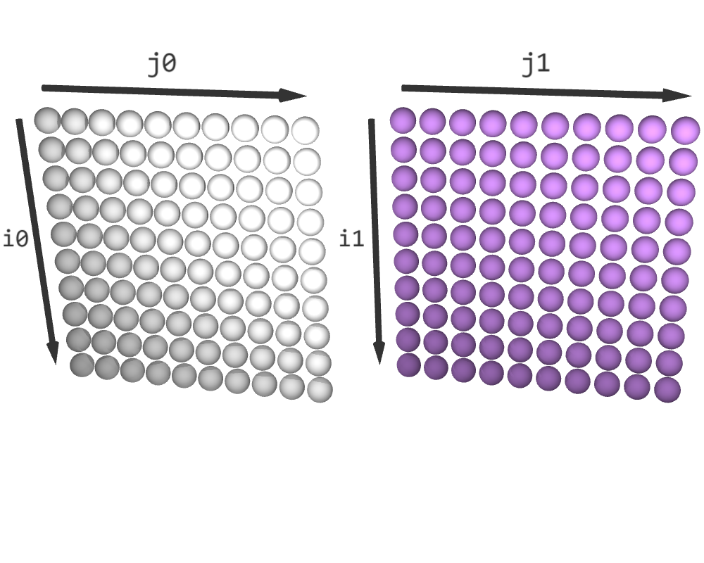
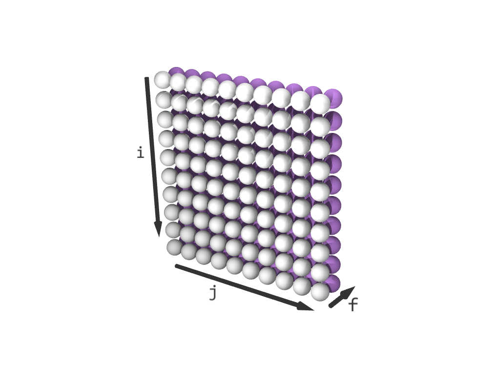
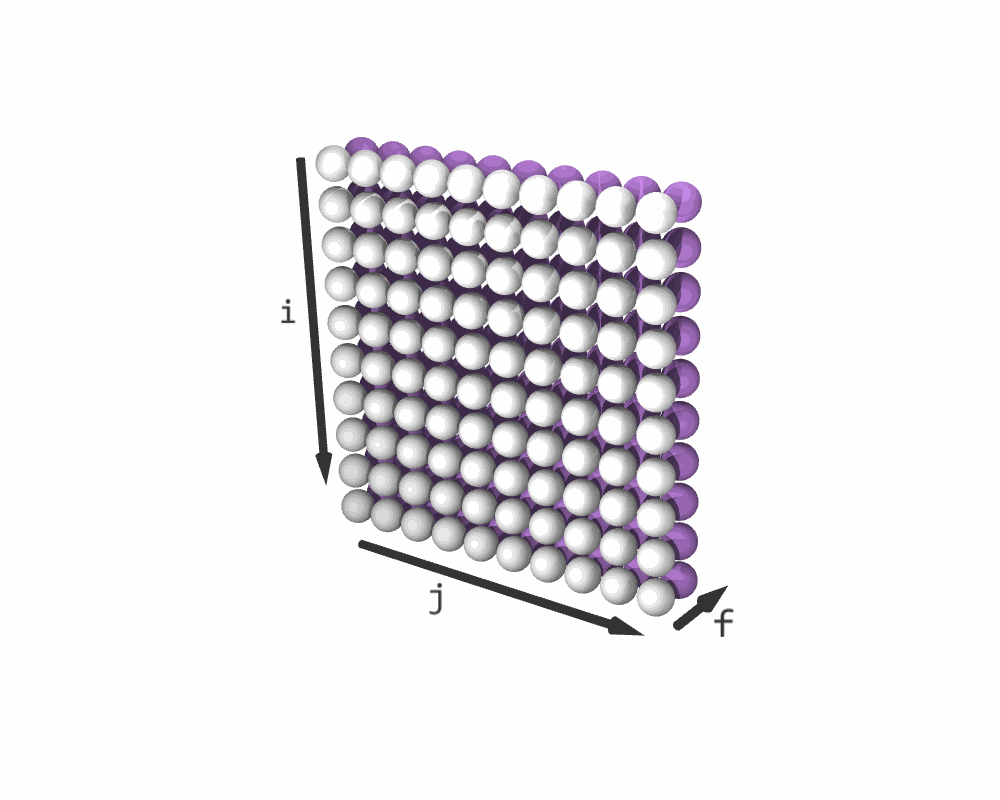
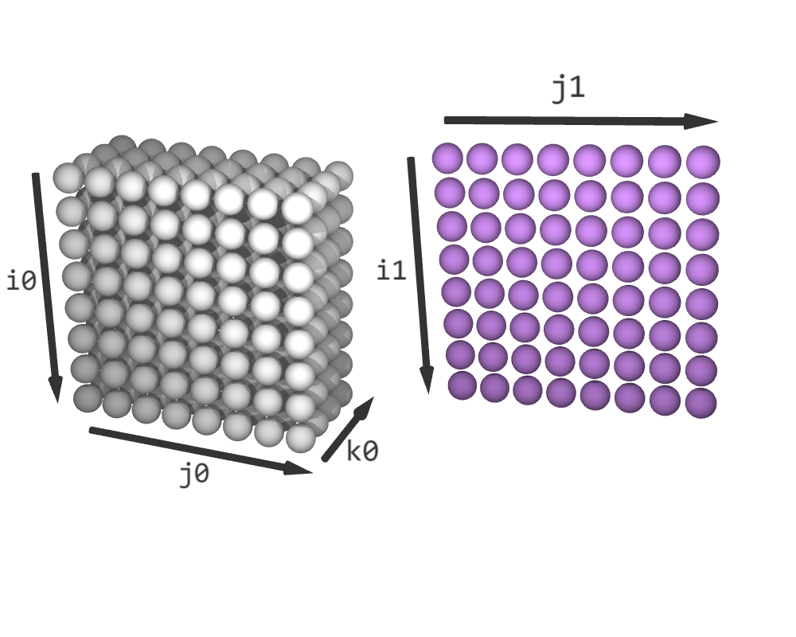
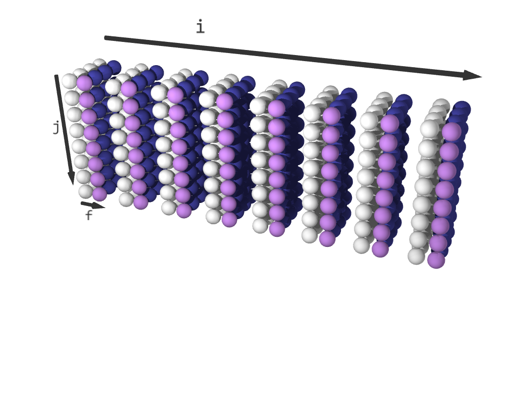
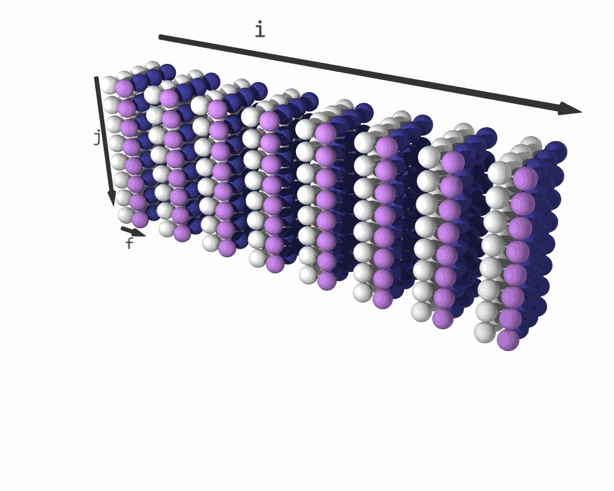
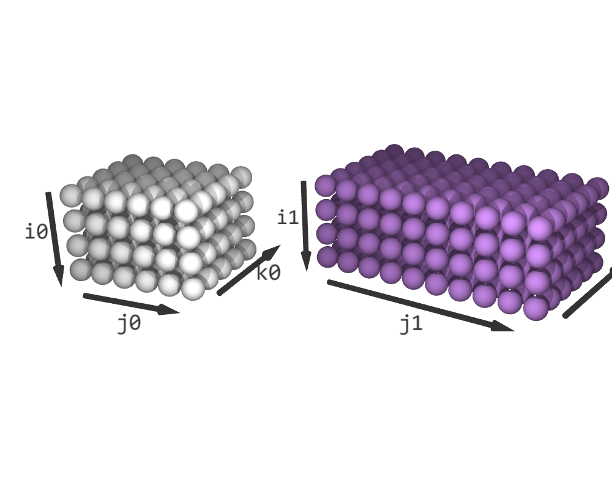
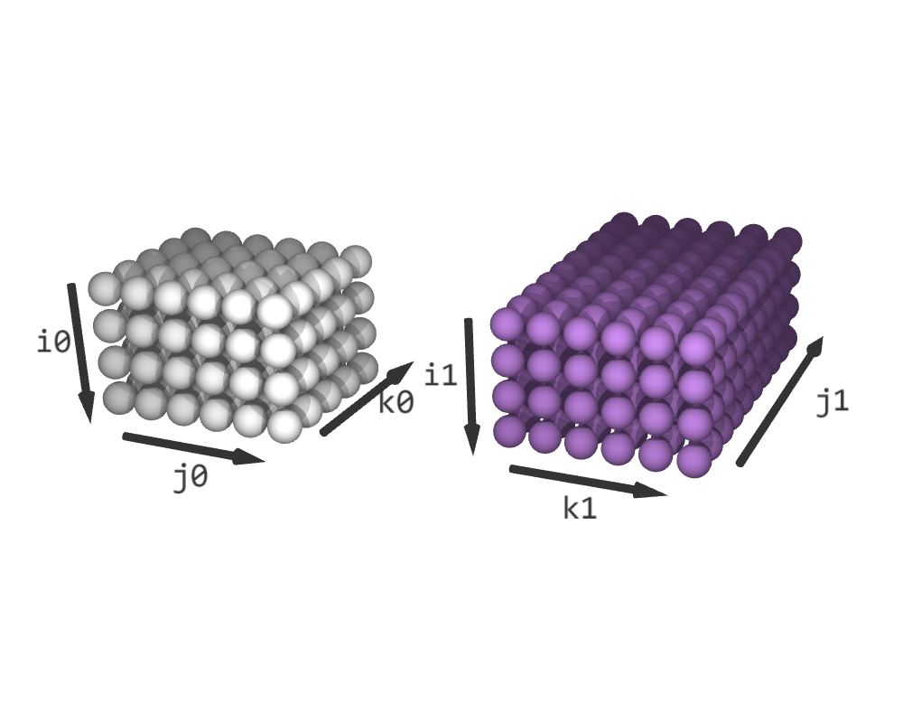
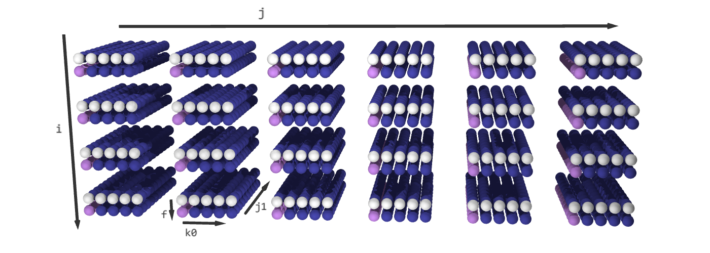

Section 4: Fusing
With fuse operation, multiple schedules can be combined into a single schedule representing the union of the work in the original schedules. These fused schedules can be transformed by any of the transformations presented in Section 3.
Full fusing
import accera as acc
# Fuse three schedules to create a fused schedule
schedule = acc.fuse(schedule0, schedule1, ...)
Full fusing is the most straightforward, where each dimension is fused with the corresponding dimension from other schedules.
Full fusing of same-shaped iteration spaces
First, consider the simplest case where we fuse schedules with identical iteration space shapes. This fusing assigns a new dimension called fusing dimension to the fused schedule schedule that does not exist in the original schedules. By default, the fusing dimension is the last dimension in the fused schedule. Its size is equal to the number of fused schedules. The slices along the fusing dimension contain a copy of the iteration logic of schedule0, schedule1. The first slice along the fusing dimension contains a copy of the iteration logic of schedule0, the second slice contains that of schedule1, and so on. Since the fusing dimension is the last dimension, the fused schedule is logically equivalent to executing an iteration of schedule0, followed by an iteration of schedule1, and so on.
Consider a scenario where we want first to shift and then scale each element of a matrix. In other words, we want to perform the equivalent of the below Python code:
C = (C + A) * B
If all three matrices are 10 by 10, one way to do this without fusing is to write:
A = acc.Array(role=acc.Role.INPUT, shape=(10, 10))
B = acc.Array(role=acc.Role.INPUT, shape=(10, 10))
C = acc.Array(role=acc.Role.INPUT_OUTPUT, shape=(10, 10))
# Create nest_simple and schedule_simple
nest_simple = acc.Nest(shape=(10, 10))
i, j = nest_simple.get_indices()
@nest_simple.iteration_logic
def _():
C[i, j] = (C[i, j] + A[i, j]) * B[i, j]
schedule_simple = nest_simple.create_schedule()
schedule_simple executes simultaneously on all three arrays. However, there can be a case where concurrent operation on these arrays creates excessive pressure on the computers memory cache, resulting in lower performance. In such a case, simultaneous operation on two arrays instead of three has a computational advantage.
Therefore, we may first want to compute C += A and then compute C *= B. Better yet, we may want to compute C in 2×2 blocks. We first compute C[0:2, 0:2] += A[0:2, 0:2]. Subsequently, we compute C[0:2, 0:2] *= B[0:2, 0:2]. Finally, we move on to the next block and compute C[2:4, 0:2] += A[2:4, 0:2], and so on. This way, fusing offers remarkable flexibility to explore all of these different execution possibilities.
First, we define two separate nests, one for the C += A logic and one for the C *= B logic, and get their corresponding default schedules:
# Create nest0 and schedule0
nest0 = acc.Nest(shape=(10, 10))
i0, j0 = nest0.get_indices()
@nest0.iteration_logic
def _():
C[i0, j0] += A[i0, j0]
schedule0 = nest0.create_schedule()
# Create nest1 and schedule1
nest1 = acc.Nest(shape=(10, 10))
i1, j1 = nest1.get_indices()
@nest1.iteration_logic
def _():
C[i1, j1] *= B[i1, j1]
schedule1 = nest1.create_schedule()
Before fusing, both schedule0 and schedule1 have a shape (10, 10). Now, lets fuse them:
# Create a fused schedule
schedule = acc.fuse(schedule0, schedule1)
i, j, f = schedule.get_indices()
schedule with a shape (10, 10, 2). It does not change schedule0 and schedule1. The last dimension in schedule is the so-called fusing dimension f. Its slice (*, *, 0) contains a copy of schedule0, and its slice (*, *, 1) contains a copy of schedule1.
|  |  |
|---|---|
| Before fusing | After fuse(schedule0, schedule1) |
In loop form, schedule is now equivalent to the following Python code:
for i in range(10):
for j in range(10):
# f = 0
C[i, j] += A[i, j]
# f = 1
C[i, j] *= B[i, j]

Resulting iteration sequence for C = (C + A) * B. (White elements represent C + A; purple elements are C * B)
Tiling
Recall that we discussed computing the output block-by-block: first computing C[0:2, 0:2] += A[0:2, 0:2], then computing C[0:2, 0:2] *= B[0:2, 0:2], and so on. This can be achieved with the following sequence of transformations:
ii, jj = schedule.tile({
i: 2,
j: 2
})
schedule.reorder(i, j, f, ii, jj)
schedule is equivalent to the following Python code:
for i in range(0, 10, 2):
for j in range(0, 10, 2):
# f = 0
for ii in range(2):
for jj in range(2):
C[i+ii, j+jj] += A[i+ii, j+jj]
# f = 1
for ii in range(2):
for jj in range(2):
C[i+ii, j+jj] *= B[i+ii, j+jj]
Constraints of Fusing Dimension
The fusing dimension comes with certain constraints that are discussed from the safety perspective with examples.
Constraint 1: the fusing dimension is executed sequentially
Unlike other dimensions that allow parallelization, vectorization, or tensorization (see Section 7 ), none of these operations can be applied to the fusing dimension. The fusing dimension must be executed sequentially. This constraint enables the safety guarantee discussed below.
Safety
Before applying any subsequent transformations, the fused schedule is always logically equivalent to executing the original schedules sequentially for each value of the fused dimensions. However, is it safe? Recall that a schedule is considered safe if the underlying logic is guaranteed to be unchanged regardless of the applied transformation. The safety of a fused schedule depends on circumstances that may break logic equivalence:
Accera preserves the order of the fused schedules for each value of the fused dimensions, regardless of how the fused schedule is transformed. For example, in the example above, the fused dimensions are i and j. Therefore, for any concrete value of i and j, the corresponding operation from schedule0 is guaranteed to execute before the corresponding operation from schedule1, regardless of how the fused schedule is transformed. More specifically, for each i and j, the operation C[i, j] += A[i, j] is guaranteed to execute before the operation C[i, j] *= B[i, j], no matter how we transform the fused schedule. Since those are the only operations that interact with C[i,j], the Accera guarantee is sufficient, and we can claim that the fused schedule is safe. With this assurance, the programmer can apply any sequence of transformations without worrying about the correctness of the resulting implementation.
However, not every fusing operation creates a safe schedule. For example, consider a scenario where we fused schedule0 and schedule1 differently:
# Reorder schedule1 before fusing
schedule1.reorder(j1, i1)
# Fuse schedule0 with the reordered schedule1
schedule_t = acc.fuse(schedule0, schedule1)
a, b, f = schedule_t.get_indices()
i0 and j1 are fused and named a. Similarly,i1 and j0 are fused and named b. As mentioned above, Accera guarantees that, for each value of a and b, the operation C[a, b] += A[a, b] is executed before C[b, a] *= B[b, a]. The fusing operation itself preserves the logical equivalence. However, the underlying logic is changed with the transformation performed before fusion:
schedule1.reorder(j1, i1)
for a in range(10):
for b in range(10):
C[a, b] += A[a, b]
C[b, a] *= B[b, a]
C[1,0] to C[1,0] * B[1,0] + A[1,0], whereas the original fused logic set C[1,0] to (C[1,0] + A[1,0]) * B[1,0]. In this case, we can conclude that schedule_t is definitely not safe. If the programmer decides to create an unsafe schedule, they take upon themselves the responsibility of maintaining logical equivalence.
Fusing iteration spaces with different shapes
If the iterations spaces have different shapes, Accera matches their shapes by padding them appropriately with empty cells.
Partial fusing
Instead of fusing all the dimensions, we may want to fuse a subset of dimensions, leaving the rest unfused. To fuse the first s dimensions, we use the syntax:
# Fuse the first s dimensions of three schedules
schedule = acc.fuse((schedule0, schedule1, ...), partial=s)
f, followed by the unfused dimensions of schedule0, schedule1, and so on.
We can easily calculate the number of dimensions in the fused schedule. For example, if we fuse the first s dimensions of a d0-dimensional space schedule0 and a d1-dimensional space schedule1, the fused iteration space will have s fused dimensions, d0 + d1 - 2s unfused dimensions, and the special fusing dimension f, for a total of d0 + d1 - s + 1 dimensions.
The fuse operation uses padding to ensure that the fused iteration space is not jagged in any direction. For example, say that we partially fuse the first 2 dimensions of schedule0, which is 4-dimensional, and schedule1, which is 3-dimensional:
schedule = acc.fuse((schedule0, schedule1), partial=2)
i, j = schedule.get_fused_indices()
f = schedule.get_fusing_index()
k, l, m = schedule.get_unfused_indices()
# Alternative way:
# i, j, f, k, l, m = schedule.get_indices()
i and j. Nest is the fusing dimensions f of size 2, followed by the unfused dimensions k and l from schedule0 and m from schedule1. The slice (*, *, 0, *, *, 0) contains a copy of schedule0, the slice (*, *, 1, 0, 0, *) contains a copy of schedule1, and the rest of schedule is padded with empty elements. Note that full fusing is a special case of partial fusing, where s is the larger of the dimensions of schedule0 and schedule1.
Constraint 2: the fusing dimension always precedes unfused dimensions
Another constraint introduced by partial fusing is that the fusing dimension must precede all of the unfused dimensions in its dimension order. This constraint applies to dimensions derived from the fusing dimension and the unfused dimensions via splitting.
Safety
The safety guarantees for partial fusing are a natural extension of the guarantees for full fusing. For each value of the fused dimensions, Accera preserves the fused schedules' order regardless of how the fused schedule is transformed. In other words, for each concrete value of fused dimensions, all the corresponding work in schedule0 (across all of its unfused dimensions) is performed before the corresponding work in schedule1 (across all of its unfused dimensions). This remains true no matter how we transform the fused schedule. While fusing, the programmer needs to consider if this property implies safety. The below examples shows how this can be done.
Partial fusing example: fully-connected neural layer with activation
Consider applying an element-wise operation, such as the ReLU function of AI, to the result of a matrix-matrix multiplication. This is called a fully connected layer with a ReLU activation in the language of neural networks. The function relu(x) is simply max(x,0).
Imagine that we have an element-wise operator relu, and we want to implement the equivalent Python code:
C = relu(C + A @ B)
A has a shape of (8, 4), B has a shape of (4, 8), and C has a shape of (8, 8). Lets now define two nests, one for C += A @ B and the other for C = relu(C), and obtain their corresponding default schedules:
# Create nest0 and schedule0
nest0 = acc.Nest(shape=(8, 8, 4))
i0, j0, k0 = nest0.get_indices()
# nest0 performs C += A @ B
@nest0.iteration_logic
def _():
C[i0, j0] += A[i0, k0] * B[k0, j0]
schedule0 = nest0.create_schedule()
# Create nest1 and schedule1
nest1 = acc.Nest(shape=(8, 8))
i1, j1 = nest1.get_indices()
# nest1 performs C = relu(C)
@nest1.iteration_logic
def _():
C[i1, j1] = acc.max(C[i1, j1], 0)
schedule1 = nest1.create_schedule()
schedule0 and schedule1, the first dimension represents the rows of C and the second dimension represents the columns of C. Additionally, schedule0 has a third dimension that schedule1 does not have. Therefore, we fuse the first two dimensions of the iteration spaces and leave the third dimension of schedule0 unfused.
schedule = acc.fuse((schedule0, schedule1), partial=2)
i, j = schedule.get_fused_indices()
f = schedule.get_fusing_index()
k0 = schedule.get_unfused_indices()[0]
# Alternative way:
# i, j, f, k0 = schedule.get_indices()
The fused iteration space schedule has a shape of (8, 8, 2, 4). Its slice (*, *, 0, *) contains a copy of schedule0, the slice (*, *, 1, 0) contains a copy of schedule1, and the rest of its elements are padded. Note that the code above overwrites the index k0, which initially was an index of schedule0. However, now it corresponds to the unfused index in schedule. Note that the name k0 is a stylistic choice, we could have chosen a different name.
|  |  |
|---|---|
| Before fusing | After fuse((schedule0, schedule1), partial=2) (padded elements in blue) |
Safety
Is schedule safe? Recall that for each value of i and j, Accera guarantees that the corresponding work in schedule0 (C[i,j] += A[i,k0] * B[k0,j] for all values of k0) is executed before the corresponding work in schedule1 (C[i,j] = max(C[i,j], 0)), and this holds regardless of how the fused schedule is transformed. Since these are the only operations that touch C[i,j] and the ReLU operation is always executed last, this warrants that schedule is safe. Therefore, we can focus all of our attention on optimizing performance without worrying about correctness from this point onwards.
The resulting schedule is now equivalent to the following Python code:
for i in range(16):
for j in range(10):
# f = 0
for k0 in range(11):
C[i,j] += A[i,k0] * B[k0,j]
# f = 1
C[i,j] = max(C[i,j], 0)

Iteration sequence for C = relu(C + A @ B). (White elements represent C + A @ B; purple elements are relu(C); blue elements are padding.)
Partial fusing example: multiplying three matrices
Consider fusing two matrix-matrix multiplications to get matrix-matrix-matrix multiplication. Specifically, say that our goal is to calculate the equivalent of the following Python code:
E += A @ B @ D
A has a shape (4, 5), B (5, 6), D (6, 10), and E (4, 10).
We start by defining the arrays. In addition to A, B, D, and E, we define a temporary array C to store the intermediate result of A@B.
A = acc.Array(role=acc.Role.INPUT, shape=(4, 5))
B = acc.Array(role=acc.Role.INPUT, shape=(5, 6))
C = acc.Array(role=acc.Role.TEMP, shape=(4, 6))
D = acc.Array(role=acc.Role.INPUT, shape=(6, 10))
E = acc.Array(role=acc.Role.INPUT_OUTPUT, shape=(4, 10))
C has the role of TEMP. Temporary arrays are mutable and initialized with zeros. Moreover, these arrays are logical objects that may not exist in memory during the entire computation.
Next, define a simple nest to compute C += A @ B and another simple nest to compute E += C @ D.
# Create nest0 and schedule0 for C = A @ B
nest0 = acc.Nest(shape=(4, 6, 5))
i0, j0, k0 = nest0.get_indices()
@nest0.iteration_logic
def _():
C[i0, j0] += A[i0, k0] * B[k0, j0]
schedule0 = nest0.create_schedule()
# Create nest1 and schedule1 E += C @ D
nest1 = acc.Nest(shape=(4, 10, 6))
i1, j1, k1 = nest1.get_indices()
@nest1.iteration_logic
def _():
E[i1, j1] += C[i1, k1] * D[k1, j1]
schedule1 = nest1.create_schedule()
C stores the output of schedule0, which is then used as one of the inputs of schedule1. Dimensions i0 and j0 correspond to the rows and columns of C in schedule0. Similarly, dimensions i1 and k1 correspond to the rows and columns of C in schedule1. Therefore, we fuse i0 with i1 and j0 with k1. We need to correctly line up the dimensions of the two iteration spaces and perform partial fusing.
schedule1.reorder(i1, k1, j1)
schedule = acc.fuse((schedule0, schedule1), partial=2)
i, j = schedule.get_fused_indices()
f = schedule.get_fusing_index()
k0, j1 = schedule.get_unfused_indices()
# Alternative way:
# i, j, f, k0, j1 = schedule.get_indices()
|  |  |
|---|---|
Before reorder(i1, k1, j1) |
After reorder(i1, k1, j1) |
The fused iteration space has a shape of (4, 6, 2, 5, 10). i is the result of fusing i0 and i1, j is the result of fusing j0 and k1 and f is the fusing dimension. On the other hand, k0 is the unfused dimension from schedule0, and j1 is the unfused dimension from schedule1. The slice (*, *, 0, *, 0) contains a copy of schedule0 and the slice (*, *, 1, 0, *) contains a copy of schedule1. The rest of the iteration space is padded with empty elements.

After fuse((schedule0, schedule1), partial=2) (White elements represent C += A @ B; purple elements are E += C @ D; blue elements are padding.)
Safety
Is schedule safe? Again, recall that for each value of i and j, Accera guarantees that all of the corresponding work in schedule0 (C[i, j] += A[i, k0] * B[k0, j] for all values of k0) is executed before any of the corresponding work in schedule1 (E[i, j1] += C[i, j] * D[j, j1] for all values of j1). In other words, each element of C is entirely computed before it is used. This confirms that the schedule is safe.
Initially, the fused schedule is equivalent to the following Python code:
for i in range(4):
for j in range(6):
for f in range(2):
for k0 in range(5):
for j1 in range(7):
if f == 0 and j1 == 0:
# f = 0, create C[i, j]
C[i, j] += A[i, k0] * B[k0, j]
if f == 1 and k0 == 0:
# f = 1, use C[i, j]
E[i, j1] += C[i, j] * D[j, j1]
The simplified loops after unswitching:
for i in range(4):
for j in range(6):
# f = 0, create C[i, j]
for k0 in range(5):
C[i, j] += A[i, k0] * B[k0, j]
# f = 1, use C[i, j]
for j1 in range(7):
E[i, j1] += C[i, j] * D[j, j1]
The advantage of this schedule is that only one element of C is active at any time in the computation. Accera can reuse the same memory location to store the active element of C instead of storing all of C in physical memory.
Tiling
As a further optimization, we can compute a 2×3 block of C. Do all the work that uses this block and then move on to the next block:
ii, jj = schedule.tile({
i: 2,
j: 3
})
schedule.reorder(i, j, f, ii, jj, k0, j1)
for i in range(0, 4, 2):
for j in range(0, 6, 3):
# f = 0
for ii in range(2):
for jj in range(3):
for k0 in range(11):
C[i+ii, j+jj] += A[i+ii, k0] * B[k0, j+jj]
# f = 1
for ii in range(2):
for jj in range(3):
for j1 in range(7):
E[i+ii, j1] += C[i+ii, j+jj] * D[j+jj, j1]